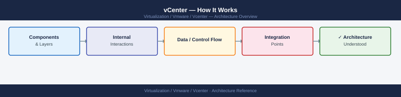

vCenter — How It Works¶

Deployment Model¶
vCenter Server is delivered as the vCenter Server Appliance (VCSA) — a Photon OS-based virtual appliance. Since vCenter 7.0, the Platform Services Controller (PSC) is embedded directly in the appliance (external PSC is deprecated). The embedded database is PostgreSQL.
A single VCSA manages the full vSphere inventory: datacenters, clusters, hosts, VMs, datastores, networks, and policies.
Core Services¶
| Service | Description |
|---|---|
| vCenter Server Appliance (VCSA) | The main management appliance; Photon OS-based |
| vpxd | Core vCenter daemon — inventory, scheduling, HA/DRS orchestration |
| vSphere Client | HTML5 web UI at https://<vcenter>/ui |
| Embedded PSC / SSO | Authentication, SSO domain, VMCA certificate authority, licensing |
| vPostgres (PostgreSQL) | Embedded database — vCenter inventory, events, tasks |
| vAPI Endpoint | Modern REST API at https://<vcenter>/api |
| Lookup Service | Service registry for all vCenter components |
| Certificate Manager (VMCA) | Issues and renews certificates for VCSA and ESXi hosts |
| Backup Scheduler | Built-in file-based backup via VAMI |
Main Dependencies¶
| Dependency | Notes |
|---|---|
| DNS | Forward and reverse resolution required for VCSA FQDN and all ESXi hosts |
| NTP | Time sync mandatory; skew > 5 minutes breaks Kerberos and SSO |
| Authentication Source | AD/LDAP identity source for user authentication |
| Management Network | VCSA must be reachable from all ESXi hosts on port 443; hosts reachable on 902 |
| Storage | VCSA runs as a VM; requires reliable datastore access |
| Certificate Trust | All services use TLS; expired certificates cascade into auth failures |
vCenter HA (VCHA)¶
VCHA provides active/passive failover for the VCSA itself. Three nodes required:
- Active — serves all management traffic
- Passive — hot standby, continuously replicates from active
- Witness — tie-breaker for split-brain; can be a small VM (2 vCPU / 1 GB RAM)
Shared storage is not required — replication is network-based over a dedicated HA network. Failover is automatic on active node failure; RPO is near-zero, RTO is typically under 60 seconds.
graph LR
clients["vSphere Clients\n& API consumers"]
active["Active VCSA\n(serves all traffic)"]
passive["Passive VCSA\n(hot standby)"]
witness["Witness VCSA\n(2 vCPU / 1 GB — tie-breaker)"]
clients -->|"port 443"| active
active -->|"continuous replication\n(HA network)"| passive
active -.->|"heartbeat"| witness
passive -.->|"heartbeat"| witness
classDef active fill:#15803d,stroke:#166534,color:#fff
classDef standby fill:#b45309,stroke:#92400e,color:#fff
classDef witness fill:#7c3aed,stroke:#6d28d9,color:#fff
classDef client fill:#2563eb,stroke:#1d4ed8,color:#fff
class active active
class passive standby
class witness witness
class clients clientService Startup Order¶
Services must start in the correct dependency order or vpxd will fail to initialise:
graph TD
vpostgres["vmware-vpostgres\n(PostgreSQL database)"]
stsd["vmware-stsd\n(SSO token service)"]
idmd["vmware-sts-idmd\n(identity management)"]
vpxd["vpxd\n(core vCenter daemon)"]
ui["vsphere-ui\n(HTML5 Client)"]
eam["vmware-eam\n(ESX Agent Manager)"]
vpostgres --> stsd
stsd --> idmd
idmd --> vpxd
vpxd --> ui
vpxd --> eam
classDef db fill:#1d4ed8,stroke:#1e40af,color:#fff
classDef sso fill:#7c3aed,stroke:#6d28d9,color:#fff
classDef core fill:#b45309,stroke:#92400e,color:#fff
classDef svc fill:#15803d,stroke:#166534,color:#fff
class vpostgres db
class stsd,idmd sso
class vpxd core
class ui,eam svc# Manual restart in dependency order
service-control --stop --all
service-control --start vmware-vpostgres
service-control --start vmware-stsd
service-control --start vmware-sts-idmd
service-control --start vpxd
service-control --start --all
# Verify
service-control --status --all
Sizing¶
| Deployment Size | Max Hosts | Max VMs | vCPU | RAM | Disk (OS + DB) |
|---|---|---|---|---|---|
| Tiny (lab) | 10 | 100 | 2 | 12 GB | 415 GB |
| Small | 100 | 1,000 | 4 | 19 GB | 480 GB |
| Medium | 400 | 4,000 | 8 | 28 GB | 700 GB |
| Large | 1,000 | 10,000 | 16 | 37 GB | 1,065 GB |
| X-Large | 2,000 | 35,000 | 24 | 56 GB | 1,805 GB |
Sizing is set at deploy time and can be changed by modifying vCPU/RAM after deployment (requires reboot). Disk partitions can be expanded online.
Failure Domains¶
| Failure | Impact | Recovery |
|---|---|---|
| vCenter failure | Hosts and VMs continue running; HA/DRS stop; no management plane | Restore VCSA from backup or VCHA failover |
| PSC/SSO failure | Authentication failures; vSphere Client inaccessible | Restart SSO services; fix identity source |
| Database failure | vCenter services crash | Restore from last backup |
| VCHA passive failure | No impact to active; witness still provides quorum | Repair passive before next failover |
Partition full (/storage/log) |
vCenter services may crash or stop logging | Free space; rotate/archive logs |
Ports and Protocols¶
| Use | Protocol | Port |
|---|---|---|
| vSphere Client / API | HTTPS | 443 |
| ESXi host agent heartbeat | TCP/UDP | 902 |
| VCSA VAMI (appliance management) | HTTPS | 5480 |
| vCenter HA replication | TCP | 8443 |
| LDAP | TCP | 389 |
| LDAPS | TCP | 636 |
| Syslog | UDP/TCP | 514 |
| DNS | TCP/UDP | 53 |
| NTP | UDP | 123 |
Key Logs¶
| Component | Log Path |
|---|---|
| vpxd (core service) | /var/log/vmware/vpxd/vpxd.log |
| vSphere Client | /var/log/vmware/vsphere-ui/logs/vsphere_client_virgo.log |
| SSO / identity | /var/log/vmware/sso/vmware-sts-idmd.log |
| SSO admin server | /var/log/vmware/sso/ssoAdminServer.log |
| VAMI | /var/log/vmware/applmgmt/applmgmt.log |
| Upgrade / patch | /var/log/vmware/applmgmt/software-packages.log |
| Certificate manager | /var/log/vmware/vmcad/certificate-manager.log |
| Postgres DB | /var/log/vmware/vpostgres/postgresql-*.log |
Useful Commands¶
# Service status
service-control --status --all
# Disk usage
df -h
# VECS certificate store — check expiry
/usr/lib/vmware-vmafd/bin/vecs-cli entry list --store MACHINE_SSL_CERT --text | grep -E "Alias|Not After"
# SSO domain info
/usr/lib/vmware-vmafd/bin/vmafd-cli get-domain-name --server-name localhost
# System resource usage
top
vmstat 1 5
# Network — open listening ports
ss -tlnp
# Photon OS version
cat /etc/photon-release
Database Operations¶
# Connect to embedded PostgreSQL
/opt/vmware/vpostgres/current/bin/psql -U postgres -d VCDB
# Inside psql
\dt # list tables
SELECT pg_size_pretty(pg_database_size('VCDB')); # check DB size
SELECT COUNT(*) FROM vc_event; # verify DB is intact
\q
Do not modify the vCenter database directly unless directed by VMware Support.
REST API Quick Reference¶
# Authenticate
TOKEN=$(curl -sk -u 'administrator@vsphere.local:<password>' \
-X POST https://vcenter.example.local/api/session | tr -d '"')
# Host inventory
curl -sk -H "vmware-api-session-id: $TOKEN" \
"https://vcenter.example.local/api/vcenter/host" | python3 -m json.tool
# VM inventory
curl -sk -H "vmware-api-session-id: $TOKEN" \
"https://vcenter.example.local/api/vcenter/vm" | python3 -m json.tool
# System health
curl -sk -H "vmware-api-session-id: $TOKEN" \
"https://vcenter.example.local/api/vcenter/health/system"
# Delete session
curl -sk -H "vmware-api-session-id: $TOKEN" \
-X DELETE https://vcenter.example.local/api/session
Swagger UI: https://<vcenter>/apiexplorer
vCenter HA (VCHA) — Topology¶
Identity Federation (vSphere 8)¶
vSphere 8 supports Active Directory Federation Services (AD FS) as an external identity provider via OIDC, replacing the older LDAP bind model. The flow below shows how vSphere Client authenticates a user through an external IdP.